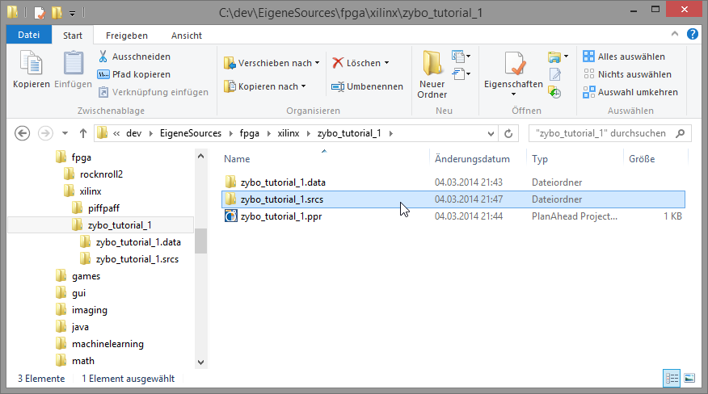
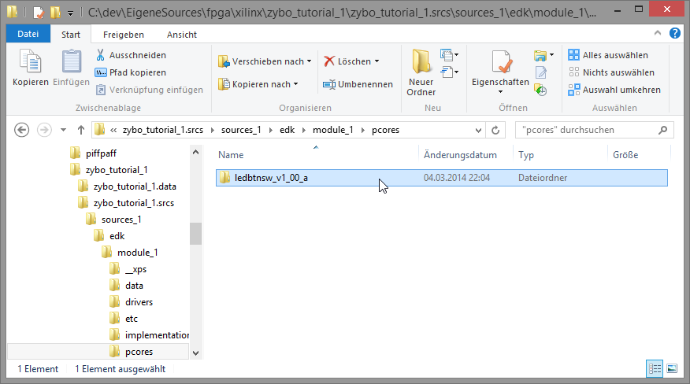
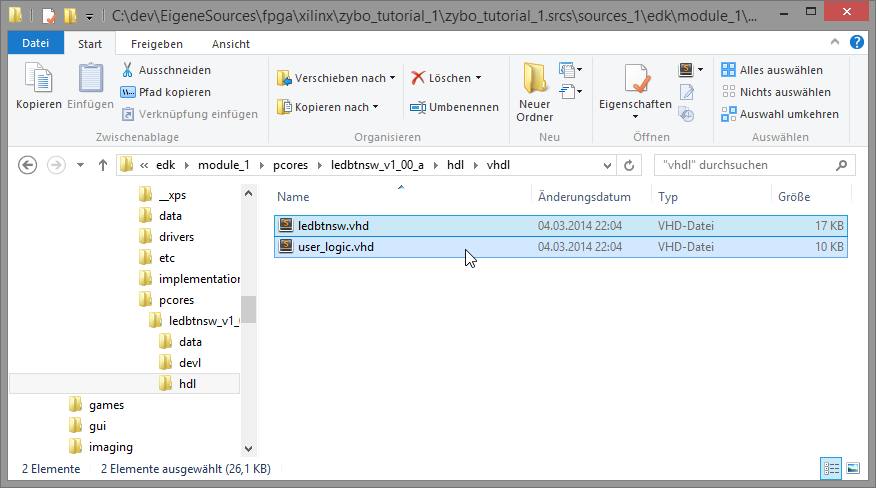
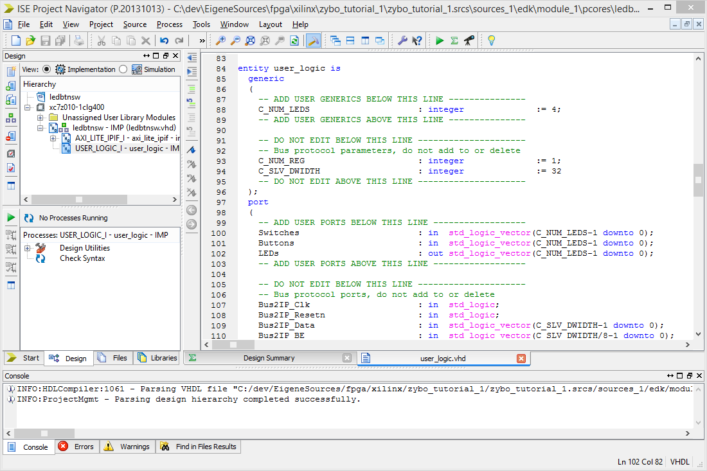
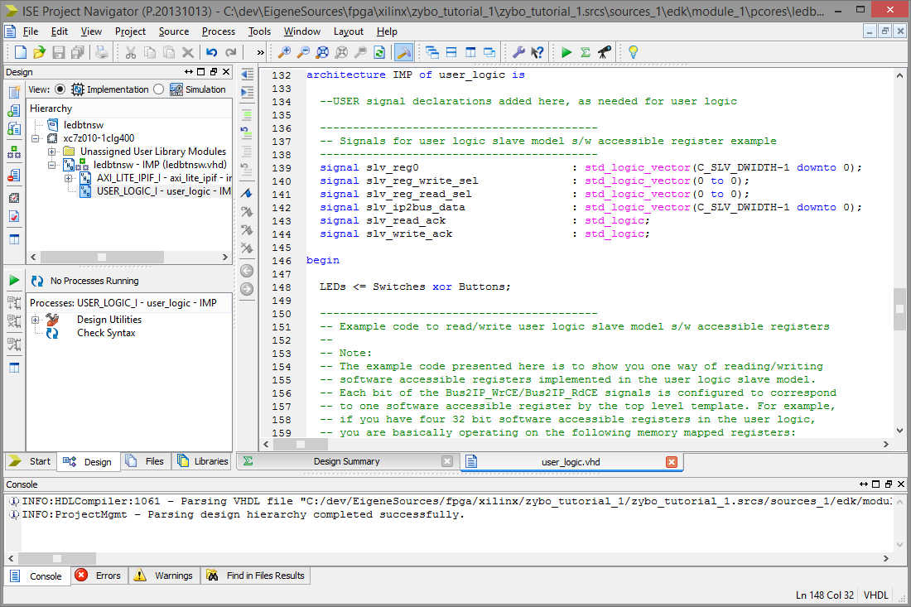
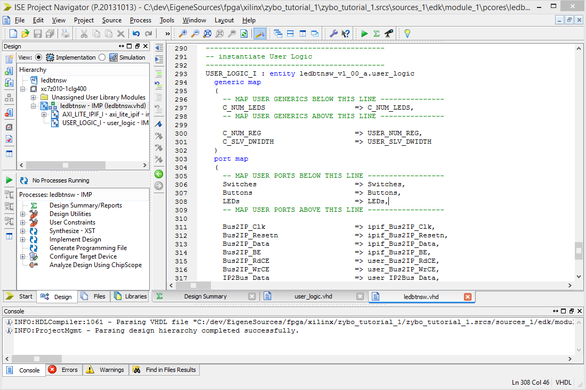
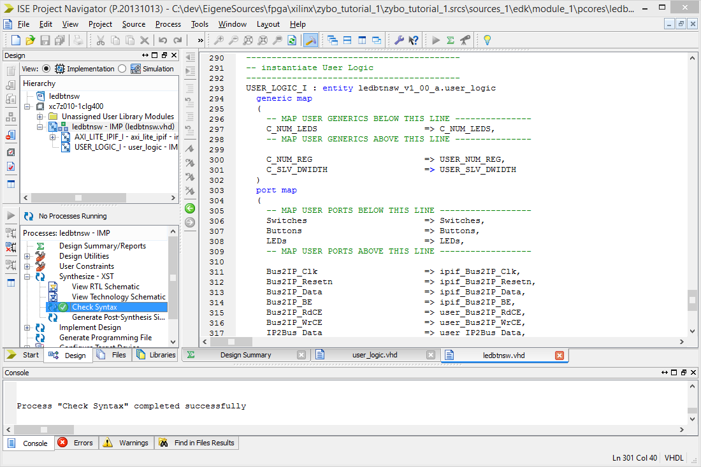

Part 2: Editing the IP logic
Navigating to the source files
Open the file browser of your choice and navigate to the project directory. You'll find a directory called your-project.srcs which contains the design sources. Enter it.

Within the sources_1/edk/your-module/pcores directory our project local IPs can be found.

Within every IP directory, a hdl/vhdl (or hdl/verilog) directory exists, containing the IP's hardware description. Note the existence of two files here, your-ip.vhd and user_logic.vhd. The former one acts as a wrapper around all user-defined VHDL files (user_logic.vhd being almost the only one at the moment) and we will need to edit both.
You may use any text editor of your choice on these files now, but this tutorial will use Xilinx ISE Project Navigator to do so in the following steps.
To find the ISE project file, head to the devl/projnav directory of the IP. We'll find a your-ip.xise file here, which we'll open by double-clicking it.
Editing the user logic
This will bring us the ISE Project Navigator where we can see the two files described earlier along with a axi_lite_ipif file which handles the bus communication for us. Open the user_logic.vhd by double-clicking it. (Note the USER_LOGIC_I identifier which is the name of the instance of this IP withing the wrapper file.)
The user_logic.vhd contains the VHDL description of this IP along with some bus and software accessible register code. Stick to the lines marked with ADD USER ... BELOW/ABOVE THIS LINE and don't touch anything else for now.
Find the lines ADD USER GENERICS BELOW THIS LINE and ADD USER PORTS BELOW THIS LINE within the entity block.
Let's add some generics and port definitions here.
C_NUM_LENS will be an integer generic defining the number of LEDs, Switches and Buttons to use. We will set that to 4 for the ZYBO board, giving us
C_NUM_LEDS : integer := 4;in addition to the existing lines in the generic block.
Also we will need some inputs for the switches and buttons, as well as outputs for the LEDs within the port region, which we'll define as
Switches : in std_logic_vector(C_NUM_LEDS-1 downto 0);
Buttons : in std_logic_vector(C_NUM_LEDS-1 downto 0);
LEDs : out std_logic_vector(C_NUM_LEDS-1 downto 0);
Again, no existing lines will be deleted. 
Scroll down to the architecture part of the IP and find the line called USER logic implementation added here.
We will add a simple behavioural logic here that xors Switches with Button states and outputs that to the LEDs.
Add
LEDs <= Switches xor Buttons;and, again, make sure nothing else will be deleted.
Editing the wrapper
Since we added ports, we will need to poke holes for them in the wrapper instance. Open the your-ip.vhd file by double-clicking on the name in the Hierarchy tree.
Enter (or paste) the same generics and port definitions you used in the user_logic.vhd in the wrapper to make them visible to the outside.
Scroll down to find the generic map and port map parts in the USER_LOGIC_I entity instantiation.
Here we will connect the outside-facing generic names with the generic names in the user_logic.vhd, as well as the outside-facing port names with the ones used internalls. Since they are identical, we can simply use
C_NUM_LEDS => C_NUM_LEDS, -- note the comma herefor the generics and
Switches => Switches,
Buttons => Buttons,
LEDs => LEDs,for the ports. Make sure nothing else is changed.
Checking syntax
Instead of relying on the synthesis to fail in case of an error, we can use ISE to at least check if we got the syntax right. In the Design tab, open the Synthesize - XST tree and find Check Syntax.
Right-click it and select Run.
You can do so for every edited file. If the syntax check succeeds, the icon will turn green.
Should you want to re-run a syntax check, right click the option again and select ReRun. (You could have double-clicked the option to run the syntax check in the first place, but do to quirky behaviour of ISE this is a safer way to know what is happening — or why nothing is.)
After that, close ISE and head back to XPS.
Parts of the tutorial
- Previous: Setting up a new project.
- Next: Peripheral import and ports configuration.